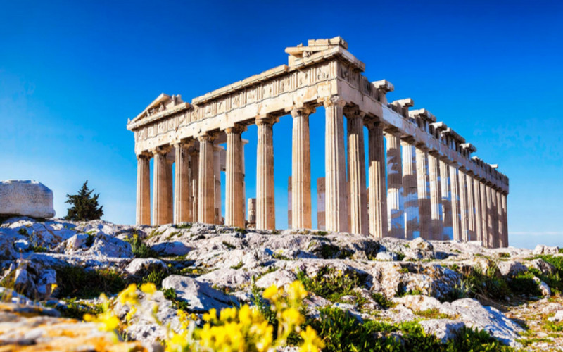
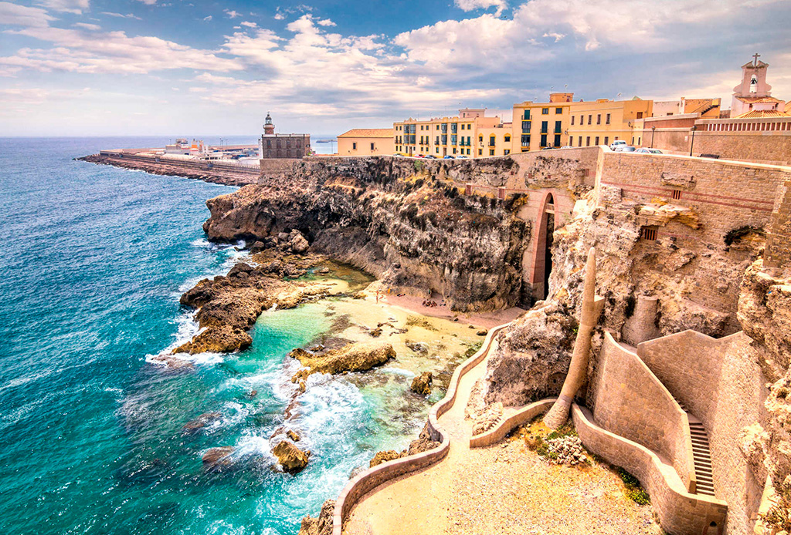

![Logo personal de [Juan_David_Gonzalez_Alarcon]](img/logo panelita.png)
Selecciona tu próxima Aventura

Kioto, Japón

Santorini, Grecia

Parque Nacional Banff, CAN

Marrakech, Marruecos
Haz clic en una tarjeta para añadir el destino a tu itinerario. ¡Planea tu ruta!
🗺️ Tu Itinerario (0 Destinos)
- Tu itinerario está vacío. Selecciona un destino.